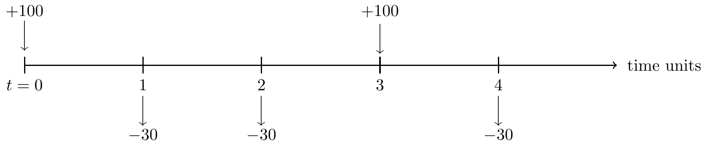
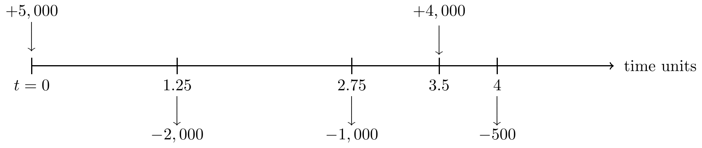

Section 8 Tutorial 2
Starting at 1 January 2015, the effective rate of interest per annum was 3% per quarter-year for 9 months, 4% per half-year for 15 months and and 2% per month thereafter.
Calculate the accumulation factor from 1 January 2015 to 1 January 2018.
Calculate the accumulation of $5,000 from 1 July 2015 to 1 October 2017.
Calculate the accumulation of $100 from 1 March 2016 to 1 August 2018.
Calculate the present value at 1 January 2015 of $ 25,000 receivable on 1 July 2016.
Calculate the present value at 1 April 2015 of $ 8,000 receivable on 1 October 2017.
Calculate the discount factor from 1 July 2015 to 1 October 2016.
The effective rate of interest is 7.25% per time unit. Cashflows are shown in the following time line.
Calculate the accumulation at time time t = 4 units of these cashflows.
Calculate the accumulation at time time t = 8 units of these cashflows.
Calculate the present value at time time t = 0 units of these cashflows.

The effective rate of interest is 6% per time unit. Cashflows are shown in the following time line.
Calculate the accumulation at time time t = 5 units of these cashflows.
Calculate the value at time time t = 2 units of these cashflows.
Calculate the present value at time time t = 0 units of these cashflows.

The effective rate of interest per annum was 4% during 2015, 3% per half-year until 1 October 2017 and 1.5% per month thereafter. Cashflows are shown in the following time line.
Calculate the accumulation on 1/1/2019 of these cashflows.
Calculate the present value on 1/1/2015 of these cashflows.
Calculate the value at time time 1/7/2017 of these cashflows.

- (Excel) It is a good exercise to check whether the Excel worksheet you have developed so far for calculating the present value and future value can be applied to the questions in this Tutorial. What would you do to improve the Excel worksheet for a more general scenario?